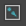

面板工具栏在每个视图面板中的面板菜单下方显示。您从面板“渲染器”(Renderer)菜单选择的渲染器不同，可用的按钮也会有细微不同。
通过按 Ctrl + Shift + M 可切换查看工具栏。
视图按钮
| 选择摄影机(Select Camera) | 在面板中选择当前摄影机。还可通过从面板菜单中选择“视图 > 选择摄影机”(View > Select Camera)来执行此操作。
在此按钮上单击鼠标右键可切换摄影机视图，或创建新的摄影机视图。 |
|
| 锁定摄影机(Lock Camera) |
锁定摄影机，避免意外更改摄影机位置并进而更改动画。请参见锁定当前摄影机。 |
|
 |
摄影机属性 | 打开“摄影机属性编辑器”(Camera Attribute Editor)。还可通过从面板菜单中选择视图 > 摄影机属性编辑器(View > Camera Attribute Editor)来打开编辑器。 |
|
|
书签 |
将当前视图设定为书签。 在此按钮上单击鼠标右键可切换书签，或使用“书签编辑器”(Bookmark Editor)来编辑书签。 |
| 图像平面 | 切换现有图像平面的显示。如果场景不包含图像平面，则会提示用户导入图像。还可通过从面板菜单中选择视图 > 图像平面(View > Image plane)来访问图像平面。
单击鼠标右键可导入图像平面、调整当前图像平面的显示模式或删除图像平面。 有关图像平面的详细信息，请参见： |
|
| 二维平移/缩放 |
开启和关闭二维平移/缩放。 在此按钮上单击鼠标右键可显示场景中的所有二维书签。选择“创建二维书签”(Create 2D Boomark)可使用当前“平移”(Pan)/“缩放”(Zoom)设置创建新书签。选择“编辑二维书签”(Edit 2D Bookmark)可打开“书签编辑器”(Bookmark Editor)并管理书签。 通过切换“忽略二维平移/缩放”(Ignore 2D Pan/Zoom)选项可在平移/缩放视图和完整摄影机视图进行选择。 |
|
| Blue Pencil |
打开 Blue Pencil 工具栏，以便可以使用虚拟绘制工具在屏幕上绘制草图。请参见在视口中使用 Blue Pencil 进行绘制。 |
摄影机设置按钮
|
|
栅格 | 在视图面板上切换显示栅格。还可通过从面板菜单中选择显示 > 栅格(Show > Grid)来切换栅格。
单击鼠标右键可在所有视图面板中显示或隐藏栅格，或打开“栅格选项”(Grid Options)窗口。 |
| 胶片门 |
切换胶片门边界的显示。还可通过从面板菜单中选择“视图 > 摄影机设置 > 胶片门”(View > Camera Settings > Film Gate)来切换“胶片门”(Film Gate)。 |
|
| 分辨率门 |
切换分辨率门边界的显示。还可通过从面板菜单中选择“视图 > 摄影机设置 > 分辨率门”(View > Camera Settings > Resolution Gate)来切换“分辨率门”(Resolution Gate)。 |
|
| 门遮罩 |
切换门遮罩边界的显示。还可通过从面板菜单中选择“视图 > 摄影机设置 > 门遮罩”(View > Camera Settings > Gate Mask)来切换“门遮罩”(Gate Mask)。 |
|
| 区域图 | 切换区域图边界的显示。还可通过从面板菜单中选择“视图 > 摄影机设置 > 区域图”(View > Camera Settings > Field Chart)来切换“区域图”(Field Chart)。 | |
| 安全动作 | 切换安全动作边界的显示。还可通过从面板菜单中选择“视图 > 摄影机设置 > 安全动作”(View > Camera Settings > Safe Action)来切换“安全动作”(Safe Action)。 | |
| 安全标题 | 切换安全标题边界的显示。还可通过从面板菜单中选择“视图 > 摄影机设置 > 安全标题”(View > Camera Settings > Safe Title)来切换“安全标题”(Safe Title)。 |
着色按钮
|
|
线框 | 切换“线框”(Wireframe)的显示。“线框”(Wireframe)是默认的着色显示。还可通过从面板菜单中选择着色 > 线框(Shading > Wireframe)或按热键 4 来切换“线框”(Wireframe)的显示。 |
 |
对所有项目进行平滑明暗处理 | 切换“对所有项目进行平滑着色处理”(Smooth Shade All)的显示。还可通过从面板菜单中选择“着色 > 对所有项目进行平滑着色处理”(Shading > Smooth Shade All)或按热键 5 来切换“对所有项目进行平滑着色处理”(Smooth Shade All)的显示。 |
 |
使用默认材质(Use Default Material) | 切换“使用默认材质”(Use Default Material)的显示。启用该选项后，如果处于着色模式，则对象上会显示默认着色材质，不管指定何种着色材质都是如此。您还可以通过从面板菜单选择着色 > 使用默认材质(Shading > Use default material)来切换“使用默认材质”(Use Default Material)的显示。 |
|
|
着色对象上的线框 | 切换所有着色对象上的线框显示。还可通过从面板菜单中选择着色 > 着色对象上的线框(Shading > Wireframe on Shaded)来切换“着色对象上的线框”(Wireframe on Shaded)的显示。 |
| 带纹理 | 切换“硬件纹理”(Hardware Texturing)的显示。还可从面板菜单中选择着色 > 硬件纹理(Shading > Hardware Texturing)或按热键 6 来切换“硬件纹理”(Hardware Texturing)。 |
照明按钮
| 使用所有灯光(Use All Lights) | 通过场景中的所有灯光切换曲面的照明。还可通过从面板菜单中选择“照明 > 使用所有灯”光(Lighting > Use All Lights)或按热键 7 来切换“使用所有灯光”(Use All Lights)。 | |
| 阴影(Shadows) |
切换“使用所有灯光”(Use All Lights)处于启用状态时的硬件阴影贴图。还可通过从面板菜单中选择照明 > 阴影(Lighting > Shadows)来切换“阴影”(Shadows)。 |
隔离选择
| 隔离选择 | 限制视图面板以仅显示选定对象。还可通过从面板菜单中选择显示 > 隔离选择(Show > Isolate Select)来隔离选定对象。 |
Viewport 2.0 屏幕上的效果按钮
| 屏幕空间环境光遮挡(Screen space ambient occlusion) |
在开启和关闭“屏幕空间环境光遮挡”(Screen space ambient occlusion)之间进行切换。 |
|
| 运动模糊(Motion blur) |
在开启和关闭“运动模糊”(Motion blur)之间进行切换。 |
|
| 多采样抗锯齿(Multisample anti-aliasing) |
在开启和关闭“多采样抗锯齿”(Multisample anti-aliasing)之间进行切换。 |
|
| 景深(Depth of field) |
在开启和关闭“景深”(Depth of field)之间进行切换。 若要在视口中查看景深，必须首先在摄影机“属性编辑器”(Attribute Editor)中启用“景深”(Depth of Field)。 |
X 射线按钮
|
|
X 射线 | 切换所有着色对象上的半透明度。还可通过从面板菜单中选择着色 > X 射线(Shading > X-Ray)来切换“X 射线显示”(X-Ray)。 |
|
|
X 射线显示活动组件(X-Ray Active Components) |
在其他着色对象的顶部切换活动组件的显示还可通过从面板菜单中选择“着色 > X 射线显示活动组件”(Shading > X-Ray Active Components)来切换“X 射线显示活动组件”(X-Ray Active Components)。 |
|

|
X 射线显示关节(X-Ray Joints) | 在其他着色对象的顶部切换骨架关节的显示。还可通过从面板菜单中选择着色 > X 射线显示关节(Shading > X-Ray Joints)来切换“X 射线显示关节”(X-Ray Joints)。 |
“颜色管理”(Color Management)按钮
 |
曝光(Exposure) | 调整显示亮度。通过减小曝光，可查看默认在高光下看不见的细节。
单击图标在默认值和修改值之间切换。 这是一个诊断选项，不保存在场景中，也不应用于渲染输出。 |
 |
Gamma | 调整要显示的图像的对比度和中间调亮度。增加 Gamma 值，可查看图像阴影部分的细节。
单击图标在默认值和修改值之间切换。 这是一个诊断选项，不保存在场景中，也不应用于渲染输出。特别是，该选项在视图变换（如果有）之上应用，您无需将其设置为 2.2 以模拟 sRGB。 |
| 视图变换 |
控制从用于显示的工作颜色空间转化颜色的视图变换。此选项非常有用，例如，如果要快速检查原始颜色值或临时应用其他视图变换，可以使用此选项。可以选择的可用颜色空间取决于您使用 OCIO 配置文件进行颜色管理还是已定义用户变换。
这些是诊断选项，不保存在场景中，也不应用于渲染输出。 除非已启用颜色管理，否则它们将不可用。请参见颜色管理。 |